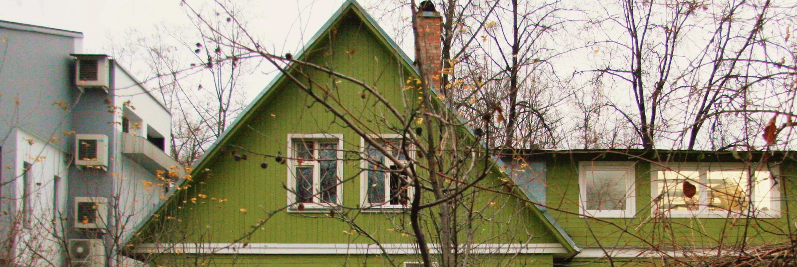
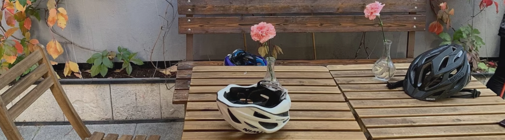
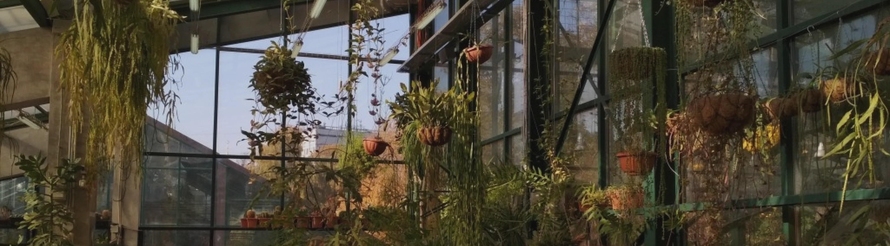
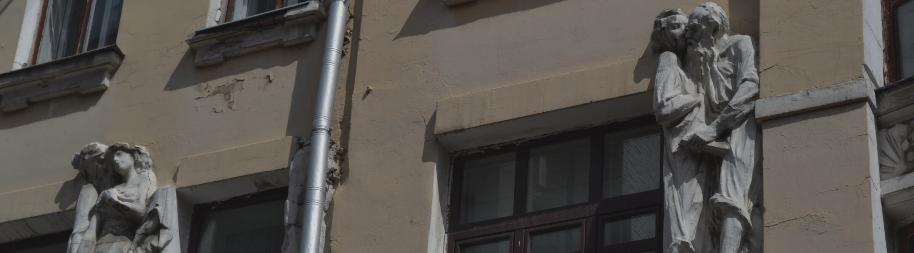
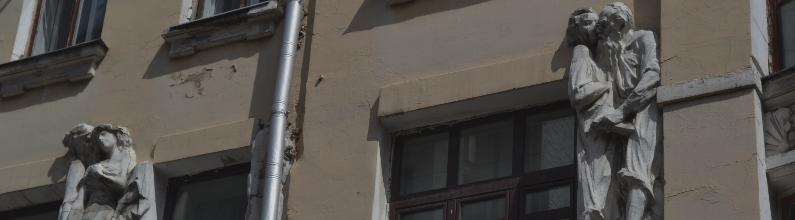

Для любителей природы

Ляпота Тульской области
Маршрут знакомит с тихими и красивыми уголками Тульской области — местами, где природа, сельская жизнь и история переплетаются.
природный
тренировка

 60 км
60 км на день
на день
Берегами тишины
прогулка
рядом с водой
 40 км 3 часа
40 км 3 часаКонтроль и баланс
тренировка
рельефный
от 16 км 1.5-3 часаЗабытые сады и парки
прогулка
парки
35 км 3 часаДля силы и выносливости
прогулка
парки
от 48 км 3-5 часовДля городских романтиков
 10 км 1 час от 36 км 1.5-3 часа 20 км 2 часа от 36 км 1.5-3 км 12 км 1 час
от 36 км 1.5-3 км 12 км 1 час
Несколько эпох на Соколе
Этот маршрут идеально подходит для неспешной велопрогулки вдоль
Москвы-реки. Он проходит через одни из самых живописных
городской
чилловый
10 км 1 часТри вело-френдли кафе
прогулка
заведения
от 36 км 1.5-3 часаМаршрут для свиданий
прогулка
парки
20 км 2 часаМосква к ускорении
тренировка
спринт
от 36 км 1.5-3 кмТайные улочки и дворики
прогулка
экскурсия
12 км 1 час